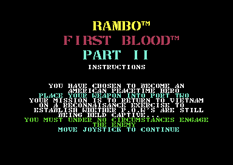
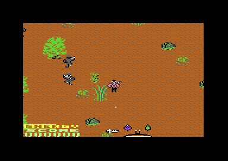

<meta charset="utf-8">
<meta name="viewport" content="width=device-width, initial-scale=1">
<title>{{title}}</title>
<link rel="preconnect" href="https://fonts.googleapis.com">
<link rel="stylesheet" href="https://fonts.googleapis.com/css2?family=Lato:wght@400;700;900&family=IBM+Plex+Mono:wght@400;500&display=swap">
<style>
:root{
  --bg:#23262d; --paper:#e9e7e1; --surface:#ffffff; --surface-2:#f1efea; --line:#d5d3cc; --line-soft:#e0ded8;
  --ink:#2f3136; --ink-soft:#55585f; --ink-mute:#80838a;
  --link:#1f5fa8; --link-hover:#154480; --accent:#1f5fa8;
  --amber:#c25a00; --cyan:#1f5fa8; --coral:#d04a3a; --green:#2a8a4a; --violet:#4a5bd6; --hl:#fff0c2;
  --chip:#2f3136; --chip-ink:#ffffff;
  --c64blue:#40318d; --c64grey:#686868;
  --fd:'Lato',system-ui,sans-serif; --fb:'Lato',system-ui,sans-serif; --fm:'IBM Plex Mono',ui-monospace,Menlo,monospace;
  --col:1080px; --gx:68px; --fs:17px; --lh:1.6; --hw:900; --h1:46px; --h2:26px; --sy:48px; --pp:26px; --r:10px;
  --plate-shadow:0 1px 2px rgba(0,0,0,.05),0 4px 14px rgba(0,0,0,.05);
}
*{box-sizing:border-box}
html{background:var(--bg);min-height:100%}
body{background:var(--paper);color:var(--ink);font-family:var(--fb);font-size:var(--fs);line-height:var(--lh);max-width:var(--col);margin:0 auto;min-height:100vh;padding:0 0 4rem}
h1,h2,h3{font-weight:var(--hw);letter-spacing:-.01em;text-wrap:balance;color:var(--ink);margin:0}
.wrap{padding:0 var(--gx)}
.hero{padding:48px var(--gx) 8px;text-align:left}
.eyebrow{font-family:var(--fm);font-size:12px;letter-spacing:.08em;text-transform:uppercase;color:var(--ink-mute);margin:0 0 10px}
.hero h1{font-size:var(--h1);line-height:1.15;letter-spacing:-.02em;margin:0 0 14px}
.hero .sub{margin:0 0 .6em;color:var(--ink-soft)}
section{padding:var(--sy) 0 24px}
section:last-of-type{border-bottom:none}
.fig{font-family:var(--fm);font-size:12px;letter-spacing:.08em;text-transform:uppercase;color:var(--ink-mute);margin:0 0 10px}
h2.t{font-size:var(--h2);margin-bottom:12px}
.lede{color:var(--ink-soft);margin:0 0 30px}
.plate{background:var(--surface);border:1px solid var(--line);border-radius:var(--r);padding:var(--pp);box-shadow:var(--plate-shadow)}
.cap{font-size:14px;color:var(--ink-mute);margin-top:14px;line-height:1.55}
.cap b{color:var(--ink);font-weight:700}
code{font-family:var(--fm);font-size:.82em;background:var(--chip);color:var(--chip-ink);border-radius:4px;padding:2px 6px;overflow-wrap:break-word;-webkit-box-decoration-break:clone;box-decoration-break:clone}

.tbl{border-collapse:collapse;font-size:14px;width:100%}.tbl td,.tbl th{border-bottom:1px solid var(--line-soft);padding:5px 8px;text-align:left;vertical-align:top}
.shots{display:flex;gap:12px;flex-wrap:wrap}.shots img{width:320px;max-width:100%;image-rendering:pixelated;border-radius:6px}
#rb-mapwrap{height:520px;overflow:auto;background:#000;border-radius:6px}#rb-map{image-rendering:pixelated;display:block}
button{font-family:var(--fm);font-size:13px;padding:4px 10px;margin:0 6px 6px 0;border:1px solid var(--line);border-radius:6px;background:var(--surface-2);cursor:pointer}
.rb-morse{font-family:var(--fm);font-size:14px;line-height:1.8;margin-top:14px;overflow-wrap:anywhere}.rb-morse .k{display:inline-block;min-width:10em;color:var(--ink-mute)}.rb-morse mark{background:var(--hl);color:var(--coral);border-radius:3px;padding:0 1px}.rb-morse .now{color:var(--accent)}
</style>
<!-- tabs -->
<header class="hero">
  <p class="eyebrow">1985 · Ocean Software</p>
  <h1>Rambo: First Blood Part II</h1>
  <p class="sub">A copy protection loads the game's second stage over the top of memory, until its last byte switches off the KERNAL under its own feet. What it loads is a scrolling jungle of 119 rows and a helicopter flight that burns your energy as fuel.</p>
</header>
<main class="wrap">
<section id="game">
  <p class="fig">01 · The game</p>
  <h2 class="t">A jungle, a hut, a helicopter</h2>
  <p class="lede">You walk Rambo north through a jungle that scrolls in every direction, shooting the <a href="#enemies">soldiers</a> who come at you. Weapons lie in the jungle. One item calls in a <a href="#heli">helicopter</a>; after the first flight you can cut ten prisoners free from a hut with the knife, and the second flight, with an enemy <a href="#heli">gunship</a> behind you, ends the game if you land far enough north.</p>
  <div class="plate"><div class="shots"></div>
  <p class="cap">The first instructions page and the start of play, from the emulator. The panel at the bottom is two sprites that hold the words ENERGY and SCORE, the <a href="#energy">energy</a> bar and the score digits (<code>$4400</code>).</p></div>
</section>
<section id="map">
  <p class="fig">02 · The map</p>
  <h2 class="t">The whole jungle, drawn from the game's bytes</h2>
  <p class="lede">The map is 16 tiles wide and 119 tall, and each tile is a block of 8 by 8 characters, so the jungle is 128 characters across and 952 deep. Rambo starts at the south end, the bottom of this picture.</p>
  <div class="plate"><div id="rb-mapwrap"><canvas id="rb-map"></canvas></div>
  <p class="cap">Drawn on this page from the clean map at <code>$E770</code>, the 67 tiles at <code>$EF00</code> and the jungle's character set at <code>$D000</code>, in the colours <code>game_init</code> sets (background 11, multicolours 0 and 8, character colour 5). <button id="rb-damage">Show damaged tiles</button> swaps each tile for the one <code>tile_damage</code> (<code>$1241</code>) puts in its place when an explosion lands on it.</p></div>
  <p>The game draws only the screen's new edge as it scrolls: <code>draw_map_row</code> (<code>$27B4</code>) and the two column drawers read the map byte for the tile, then the character inside that tile. Before every game <code>map_restore</code> (<code>$09CC</code>) copies the clean map over the working copy at <code>$E000</code>, because explosions rewrite tiles in the working copy for the rest of the game.</p>
</section>
<section id="sound">
  <p class="fig">03 · The sound</p>
  <h2 class="t">Martin Galway's music, played by the game's own driver</h2>
  <p class="lede">Every tune the game stores, and its sound effects, each started the way the game starts it.</p>
  <div class="plate"><div id="rb-sid"></div><p class="cap">The game's own driver (<code>$8100</code>-<code>$AFB3</code>, from the listing) runs on this page on the kit's 6502, once a frame, through a model of the SID with a 6581's filter. Each button sends the driver the command the game sends: silence (1), all three voices for music (26), then the tune's command. <code>test_music.js</code> beside this page runs the same commands on the whole listing and checks every write to the chip, frame by frame. Tune 28 has no caller in the game's code.</p></div>
  <div class="plate" style="margin-top:16px"><div id="rb-sfx"></div><p class="cap">The effects, by the command each caller sends. The two loops repeat until stopped. The game starts and stops them in the helicopter stage, but they sound only while the music has no voices (command 26 with X = 0, which the S key sends), so these two buttons send that instead of 7.</p></div>
  <p>The driver has one entry. The game puts a command number in A and calls <code>sound_command</code> (<code>$8100</code>), which looks up a routine in a split table (<code>$836E</code> and <code>$838D</code>). Several commands land part way into a run of <code>BIT</code> instructions: the second byte of each <code>BIT</code> is a hidden <code>LDY #n</code>, so one entry point per command picks a tune or an effect with no table of its own. Each voice reads a sequence of notes and lengths and of command bytes <code>$C0</code> to <code>$DC</code> (call, return, repeat, jump, load an instrument, transpose, run machine code), with arpeggios, four-part slides and pulse-width sweeps (<code>v1_tick</code>, <code>$870C</code>, and its copies for voices 2 and 3).</p>
</section>
<section id="loading-tune">
  <p class="fig">04 · The loading tune</p>
  <h2 class="t">Music: the loading tune spells out its makers in Morse</h2>
  <p class="lede">While the cassette loads, it plays a tune of its own by Martin Galway, which the game itself never plays. For its first half minute voice 1 is Morse code, tapping out the names of the five people who made the game. Listen closely and every I comes out as an E.</p>
  <div class="plate">
    <div id="rb-load"></div>
    <div class="rb-morse" id="rb-morse">
      <div><span class="k">Voice 1 sends</span><span id="rb-morse-sent"></span><span class="now" id="rb-morse-now"></span></div>
      <div><span class="k">The tune's text</span><span id="rb-morse-text"></span></div>
    </div>
    <p class="cap">The player runs the tune's own code and notes, as the cassette leaves them in memory, on the kit's 6502, once a frame as the cassette calls it. It was checked against the cassette loading in VICE: the sound chip's registers after each of the first 9,000 calls, three minutes of music, are the player's. The first line reads voice 1 as it plays, a short note a dot and a long one a dash; the second is the text the tune sends, from its own memory. The gaps between the names are ours: the Morse has none.</p>
  </div>
  <p>The Morse starts a second into the tune and ends 31 seconds in, at about 20 words a minute: a dot lasts three frames, a dash seven, with three frames between them and eleven between letters. The names run on with no gaps: Bill Barna, David Collier, Martin Galway, Tony Pomfret and Steve Wahid, the coders, artists and musician the high-score table credits by first name (<a href="discoveries.html#credits">Discoveries</a>). The text is spelled right in memory, so the Es come from the code that sends it (<a href="discoveries.html#morse">Discoveries</a>). The High Voltage SID Collection lists the tune as the first of the game's, and keeps a second copy with the Morse put right.</p>
  <p>The cassette starts the tune about 73 seconds in, as the screen turns yellow for the loading picture (<a href="graphics.html#loading">Graphics</a>), and plays it at full volume with no filter. After the Morse, voice 1 joins the other two in the music. The tune runs for 3 minutes 36 seconds, but the cassette stops it after 3 minutes 22 seconds, about 14 seconds before its end, and silences the chip. The player plays it to the end.</p>
</section>
<section id="enemies">
  <p class="fig">05 · The enemies</p>
  <h2 class="t">A budget of soldiers</h2>
  <p class="lede">Soldiers walk in from seven entry zones, but only while a budget lasts, and your own noise raises it.</p>
  <table class="tbl"><tr><th>What adds to the spawn budget (<code>$119B</code>)</th><th>How much</th><th>Where</th></tr>
  <tr><td>Each frame, by chance</td><td>1, one time in 200</td><td><code>enemies_update</code> <code>$0F42</code></td></tr>
  <tr><td>An explosion (grenade, rocket, thrown weapon)</td><td>5</td><td><code>explosion_start</code> <code>$18EC</code></td></tr>
  <tr><td>Firing weapon 4</td><td>5</td><td><code>fire_check</code> <code>$19F7</code></td></tr>
  <tr><td>An enemy firing a bullet</td><td>1</td><td><code>bullet_fire</code> <code>$2586</code></td></tr></table>
  <p>Each new soldier uses up one unit (<code>enemy_spawn</code>, <code>$118B</code>), so a quiet knife keeps the jungle emptier than a rocket launcher, which is how the instructions' advice not to engage the enemy turns into code. Once Rambo has picked up an item that is not a weapon (counted at <code>$0AFF</code>), the budget stops limiting the soldiers.</p>
  <p>Soldiers also come out of the ground at character <code>$93</code> (<code>hole_scan</code>, <code>$0D6F</code>), and they fire more often the further north you are: <code>bullet_fire</code> picks a random soldier and aims along a straight line at Rambo (<a href="discoveries.html#north">the odds, by row</a>). The <a href="graphics.html">Graphics</a> tab draws the soldiers walking, kneeling, rising and falling, in their colours and at the game's pace.</p>
</section>
<section id="energy">
  <p class="fig">06 · Energy</p>
  <h2 class="t">Damage is paid off one unit a frame</h2>
  <p class="lede">Every hit is paid off slowly, and flying costs the same bar.</p>
  <table class="tbl"><tr><th>Hit</th><th>Units of damage</th><th>Where</th></tr>
  <tr><td>A walking soldier touches Rambo</td><td>4</td><td><code>enemy_touch</code> <code>$0BE6</code></td></tr>
  <tr><td>An enemy bullet</td><td>7</td><td><code>bullet_touch</code> <code>$0C33</code></td></tr>
  <tr><td>The gunship's shot</td><td>5</td><td><code>gunship_shot_hit</code> <code>$319D</code></td></tr>
  <tr><td>Flying, as fuel</td><td>1 every few frames</td><td><code>gunship_fire_timer</code> <code>$304E</code></td></tr></table>
  <p>The energy starts at 48 units (<code>$0CC3</code>). A hit adds to a damage counter (<code>$0B</code>), and <code>energy_tick</code> (<code>$0C89</code>) takes one unit a frame off the energy and clears one pixel of the bar, so the bar runs down smoothly after a hit. The helicopter has no fuel gauge of its own: its fuel is the same bar.</p>
</section>
<section id="heli">
  <p class="fig">07 · The helicopter</p>
  <h2 class="t">A second engine for the flight</h2>
  <p>The flight runs its own main loop at <code>$3009</code>, with the jungle engine's routines reached through a jump table at <code>$0337</code>. The helicopter has 12 frames of heading, which it turns through toward the stick (<code>steer_heading</code>, <code>$36CE</code>), and scrolls two pixels a step. The gunship steers toward it with its own speed and a fraction for each axis (<code>gunship_steer_y</code>, <code>$3373</code>), takes five rocket hits to bring down, and only follows you on the second flight, after the hut has been opened (<code>gunship_pursues</code>, <code>$3825</code>). The <a href="graphics.html">Graphics</a> tab draws all twelve frames of each, with their rotors turning.</p>
</section>
</main>
<footer style="margin:16px 0 0;padding:22px var(--gx) 0;border-top:1px solid #e0ded8;font-family:'IBM Plex Mono',ui-monospace,Menlo,monospace;font-size:12px;color:#80838a"><a href="https://github.com/gamesexplained/gamesexplained" style="color:#1f5fa8;text-decoration:none">GitHub</a> · <a href="https://discord.gg/3V9GWyRDWV" style="color:#1f5fa8;text-decoration:none">Discord</a><br>© Games Explained contributors. Write-ups, facts and symbol maps are available under <a href="https://creativecommons.org/licenses/by-sa/4.0/" style="color:#1f5fa8;text-decoration:none">CC BY-SA 4.0</a>; code under <a href="https://opensource.org/licenses/MIT" style="color:#1f5fa8;text-decoration:none">MIT</a></footer>
<script src="../../lib/c64.js"></script>
<script src="../../lib/sid.js"></script>
<script src="../../lib/cpu6502.js"></script>
<script>
/* rb-music */
// createDriver for C64Sid: runs the game's own music driver ($8100-$AFB3 and its zero page
// $20-$2F, from the listing over RB_DRIVER_RANGES) on the kit's 6502. A button first sends command
// 25 with X = 15, as the start-up does ($C1BA): it sets the master volume to 15, which no command of
// the music's sets, and the chip is silent at volume 0. Then it sends what the game sends for the
// sound: command 1 (silence), command 26 with X = 7 (music may use all three voices), then its own
// command. Each frame is command 0, as music_tick ($1159) sends it; the button stops when command 2
// returns zero (cmd_status, $8466), as message_screen waits for it.
const RB_DRIVER_RANGES = [[0x0020, 0x002F], [0x8100, 0xAFB3]];
const RB_TUNES = [
  { name: 'Play (12)', cmd: 12 }, { name: 'Briefing (9)', cmd: 9 }, { name: 'Heroes table (3)', cmd: 3 },
  { name: 'Name entry (29)', cmd: 29 }, { name: 'New high score (5)', cmd: 5 }, { name: 'Northern rows (4)', cmd: 4 },
  { name: 'Task one, game over (11)', cmd: 11 }, { name: 'Rescue the POWs (6)', cmd: 6 }, { name: 'The gunship (7)', cmd: 7 },
  { name: 'Congratulations (10)', cmd: 10 }, { name: 'The hut opens (27)', cmd: 27 }, { name: 'No caller (28)', cmd: 28 },
];
const RB_EFFECTS = [
  { name: 'Item taken (30)', cmd: 30 }, { name: 'Enemy killed (18)', cmd: 18 }, { name: 'Bullet hits Rambo (24)', cmd: 24 },
  { name: 'Weapons 1 and 2 (17)', cmd: 17 }, { name: 'Weapon 3 (19)', cmd: 19 }, { name: 'Weapon 4 (23)', cmd: 23 },
  { name: 'Weapon 5 (16)', cmd: 16 }, { name: 'Thrown weapon lands (13)', cmd: 13 }, { name: 'Shot type 8 explodes (14)', cmd: 14 },
  { name: 'Shot type 5 explodes (15)', cmd: 15 }, { name: 'Loop A, helicopter (20)', cmd: 20, mask: 0 }, { name: 'Loop B, gunship (22)', cmd: 22, mask: 0 },
];
function createDriver(D, C64Cpu) {
  const base = new Uint8Array(0x10000);
  for (const [ad, bytes] of D.mem) base.set(bytes, ad);
  const sid = new Uint8Array(25);
  let m, cpu, writes = [], over = false;
  const io = {
    read(ad) { throw new Error('read $' + ad.toString(16)); },
    write(ad, val) {
      const r = (ad - 0xD400) & 0x1F;
      if (ad >= 0xD400 && ad < 0xD800 && r < 25) { sid[r] = val; writes.push(r, val); return; }
      throw new Error('write $' + ad.toString(16));
    },
  };
  const cmd = (a, x) => cpu.call(0x8100, { a, x: x || 0 }, { maxSteps: 200000 });
  return {
    sid,
    get writes() { return writes; },
    init(t) {
      const c = D.list[t];
      m = base.slice(); cpu = new C64Cpu.CPU(m, { port: 0x35, io });
      sid.fill(0); over = false; writes = [];
      cmd(25, 15); cmd(1); cmd(26, c.mask === undefined ? 7 : c.mask); cmd(c.cmd);
    },
    stop() { over = true; writes = []; },
    play() {
      writes = [];
      if (over) return;
      cmd(0);
      cmd(2);
      if (cpu.a === 0) over = true;
    },
    playing() { return !over; },
    voice(v) {
      if (!m) return {};
      return { at: m[0x20 + 2 * v] | m[0x21 + 2 * v] << 8, transpose: m[0x8204 + v] };
    },
  };
}
// end of rb-music
</script>
<script>
(function () {
const $ = (id) => document.getElementById(id);
C64.load('listing.json').then((L) => { sound(L.ram); map(L.ram); });

function sound(ram) {
  const mem = RB_DRIVER_RANGES.map(([a, b]) => [a, ram.slice(a, b + 1)]);
  const rows = [{ k: 'Sequence', f: (v) => v.at === undefined ? '' : C64.hex(v.at) },
                { k: 'Transpose', f: (v) => v.transpose === undefined ? '' : String(v.transpose) }];
  C64Sid.mount($('rb-sid'), { driver: createDriver, data: { mem, list: RB_TUNES }, tunes: RB_TUNES.map((t) => t.name), rows, filter: '6581' });
  C64Sid.mount($('rb-sfx'), { driver: createDriver, data: { mem, list: RB_EFFECTS }, tunes: RB_EFFECTS.map((t) => t.name), rows: [], filter: '6581' });
}

// The map: 119 rows of 16 tiles from $E770 (row 0 the south end, drawn at the bottom), each tile
// 8x8 characters at $EF00 + tile*64, each character a multicolour glyph of the set at $D000.
function map(ram) {
  const cv = $('rb-map'), W = 128 * 8, H = 952 * 8, S = 0.5;
  cv.width = W; cv.height = H; cv.style.width = (W * S) + 'px';
  const P = C64.PAL.map((h) => [parseInt(h.slice(1, 3), 16), parseInt(h.slice(3, 5), 16), parseInt(h.slice(5, 7), 16)]);
  const cols = [P[11], P[0], P[8], P[5]];
  const ctx = cv.getContext('2d');
  let damaged = false;
  function draw() {
    const img = ctx.createImageData(W, H), d = img.data;
    for (let row = 0; row < 119; row++) for (let tc = 0; tc < 16; tc++) {
      let tile = ram[0xE770 + row * 16 + tc];
      if (damaged) tile = ram[0x1241 + tile];
      for (let cy = 0; cy < 8; cy++) for (let cx = 0; cx < 8; cx++) {
        const ch = ram[0xEF00 + tile * 64 + cy * 8 + cx];
        const gx = (tc * 8 + cx) * 8, gy = ((118 - row) * 8 + cy) * 8;
        for (let py = 0; py < 8; py++) {
          const b = ram[0xD000 + ch * 8 + py];
          for (let px = 0; px < 4; px++) {
            const c = cols[(b >> (6 - 2 * px)) & 3], o = ((gy + py) * W + gx + px * 2) * 4;
            d[o] = d[o + 4] = c[0]; d[o + 1] = d[o + 5] = c[1]; d[o + 2] = d[o + 6] = c[2]; d[o + 3] = d[o + 7] = 255;
          }
        }
      }
    }
    ctx.putImageData(img, 0, 0);
    $('rb-mapwrap').scrollTop = $('rb-mapwrap').scrollHeight;
  }
  $('rb-damage').onclick = () => { damaged = !damaged; $('rb-damage').textContent = damaged ? 'Show the map as loaded' : 'Show damaged tiles'; draw(); };
  draw();
}
})();
</script>
<script type="application/json" id="rb-loader-data">{"about":"The loading tune's code and notes, $2000-$31EE, as the cassette leaves them in memory when it starts the tune","blocks":[[8192,"TAYmTOMwTPolrsgprMkpjtUpjNYprcApjdcprcEpjdgpYK7vKazwKY78KYz9Ka3nKY3+Ka3oKY3/KWCuFiqsFyqOIyqMJCqtDiqNJSqtDyqNJipgrb0pjdQprbwpjdMprbspjdIprbopjdEpYK3kKY37Ka3jKY36Ka3iKY35Ka3hKY34KWCtCyqNIiqtCiqNISqtCSqNICqtCCqNHypgpRlKkATGGvAOTDEiqQMYZRCFEJAC5hGgALEQycCQICk/qr3pKo3ZIL3qKo3aIMixEKqFFsixEIUXTP//TF8hhRjJYJAC6WDJX/DxbR0pqqAEqQCZAtS56iiZAtSIEPKt7CiNzCm8Nyq9kCqNzymM0CmNANSMAdSt5SiNwynwDqAJueIomcApiBD3IAkgruEojr8p8B+gDbnUKJmyKYgQ94opCPAMpRgYbR0pjbwpjL4pIFQgru8orPAojs0pjM4poAGxEKYY4GCwBKq99CiFGqkCGGUQhRCQAuYRTDEi5h2kHcAI8Am+BSm5DSlM7SGlGSn+hRlgph0YmGUQnQUpqQBlEZ0NKaUWnRUpxh2YTK0gph3eFinwBeiKqBDJ5h2pAUytIKAEohyxFp3UKMqIEPdMqyCgDaIN0O6gCaIX0OigMKIw0OKgCaIJ0NylF4YQhRFMtiCpIEipqkhsFgCpA6QdGGUQmQUpqQBlEZkNKcYdTOshyLEQjR0pqQTQ4o4dKZhMrSCd1ChMqyCdsilMqyBgrs4p8PqtzCkpCPAWpRrNzSmwL6kAjc0prcwpKfaNzCnQHa3NKdAOzs4p0BaiBp0A1MoQ+mDOzSnQCK3MKSn2jQTUrcMp8F2twinwBs7CKUzVIhiu1Sms1imt1ynwEIptxCmqmG3FKajO1ylMySKt2CnwEIptximqmG3HKajO2ClMySKtwykpgfAOEAYgCSBMgyIgFSBMgyKO1SmM1imOAtSMA9StvynwGikI0Beuzyms0CkYrb4p8CnOvimtvykpAtBjYK6+KRADrr0prbwpGH2yKcqOvimovpAquTcqTGAjGK3RKfAPztEpim2yKaqYbbMpTGAjrdIp8A/O0imKbbQpqphttSlMYCOt0ynwD87TKYpttimqmG23KUxgI63UKfAaztQpim24KaqYbbkpqI4A1IwB1I7PKYzQKWAgVCBMEiOlGSkC8ATGG/AOTOAkqQMYZRKFEpAC5hOgALESycCQICk/qr0lK42vI70mK42wI8ixEqqFFsixEoUXTP//TCQkhRjJYJAC6WDJX/DxbWcpqqAEqQCZCdS5NCmZCdSIEPKtNimN8ym8Nyq9kCqN9imM9ymNB9SMCNStLymN6inwDqAJuSwpmecpiBD3ICIgrispjuYp8A6gDbkeKZnZKYgQ9yBtIK45Kaw6KY70KYz1KaABsRKmGOBgsASqvT4phRupAhhlEoUSkALmE0zgJOYepB7ACPAJvk8puVcpTKwkpRkp/YUZYKYeGJhlEp1PKaUTaQCdVymlFp1fKcYemEyDI6Ye3mAp8AXoiqgQyeYeqQFMgyOgBKIcsRadHinKiBD3TIEjoA2iDdDuoAmiF9DooByiHNDipReGEoUTTIwjqQOkHhhlEplPKaUTaQCZVynGHkyqJMixEo1nKakE0OKdHilMgSOd2SlMgSNgrvUp8Pqt8ykpCPAWpRvN9CmwL6kAjfQprfMpKfaN8ynQHa30KdAOzvUp0BaiBp0H1MoQ+mDO9CnQCK3zKSn2jQvUreop8F2t6SnwBs7pKUyEJRiu/Cms/Smt/inwEIpt6ymqmG3sKajO/ilMeCWt/ynwEIpt7SmqmG3uKajO/ylMeCWt6ikpgfAOEAYgIiBMMiUgLiBMMiWO/CmM/SmOCdSMCtSt5inwFq72Kaz3KRit5SnwDM7lKa3mKSkC0D5gGK34KfAPzvgpim3ZKaqYbdopTOYlrfkp8A/O+SmKbdspqpht3ClM5iWt+inwJs76KYpt3SmqmG3eKUzmJYpt3ymqmG3gKaiOB9SMCNSO9imM9ylgIG0gTKAlpRkNzikN9SkNHCpgIJ8gIHQjTA8mpRkpBPAExhzwDkyZJ6kDGGUUhRSQAuYVoACxFMnAkCApP6q9ByuNSia9CCuNSybIsRSqhRbIsRSFF0z//0zQJoUYyWCQAulgyV/w8W2xKaqgBKkAmRDUuX4pmRDUiBDyrYApjRoqvDcqvZAqjR0qjB4qjQ7UjA/UrXkpjREq8A6gCbl2KZkOKogQ9yA7IK51KY4NKvAfoA25aCmZACqIEPeKKQjwDKUYGG2xKY0KKowMKiCGIK6DKayEKY4bKowcKqABsRSmGOBgsASqvYgphRypAhhlFIUUkALmFUyZJ+YfpB/ACPAJvpkpuaEpTF4npRkp+4UZYKYfGJhlFJ2ZKakAZRWdoSmlFp2pKcYfmEweJqYf3qop8AXoiqgQyeYfqQFMHiagBKIcsRadaCnKiBD3TBwmoByiHNDuoA2iDdDooAmiCdDiyLEUjbEppReGFIUVTCcmqQOkHxhlFJmZKaUVaQCZoSnGH0xcJ8ixFI2xKakE0OKOsSmYTB4mnWgpTBwmnQAqTBwmYK4cKvD6rRoqKQjwFqUczRsqsC+pAI0bKq0aKin2jRoq0B2tGyrQDs4cKtAWogadDtTKEPpgzhsq0AitGiop9o0S1K0RKvBdrRAq8AbOECpMPSgYriMqrCQqrSUq8BCKbRIqqphtEyqoziUqTDEorSYq8BCKbRQqqphtFSqoziYqTDEorREqKYHwDhAGIDsgTOsnIEcgTOsnjiMqjCQqjhDUjBHUrQ0q8BopCNAXrh0qrB4qGK0MKvApzgwqrQ0qKQLQW2CuDCoQA64LKq0KKhh9ACrKjgwqqL6QKrk3KkzAKBitHyrwD84fKoptACqqmG0BKkzAKK0gKvAPziAqim0CKqqYbQMqTMAorSEq8CbOISqKbQQqqphtBSpMwCiKbQYqqphtByqojg7UjA/Ujh0qjB4qYCCGIEx6KPj/CAD4/7j/AwYDAB4FFBQABRQA7P8ACEHdzIL/AAAAAAQIDBAUGBwgJCgsMDQ4PEAAAAAAAAAAAAAAAAAAAAAAAAAAAAAAAAAAHgDi/x4AlwADBgMAMgceHgAF4v8eAIQLQYjMlsgAAAAABAgMEBQYHCAkKCwwNDg8QAAAAAAAAAAAAAAAAAAAAAAAAAAAAAAAAAAeAOL/HgBjAAMGAwAyBx4eAAXi/x4AhAtBiMyWyAAAAAAECAwQFBgcICQoLDA0ODxAAAAAAAAAAAAAAAAAAAAAAAAAAAAAAAAAAAAAAAAAAAAAAAAAAAAAAAAAAAAAAAAAAAAAAAAAAAAAAAAAAAAAAAAAAAAAAAAAAAAAAAAAAAAAAAAAAAAAAAAAAAAAAAAAAAAAAAAAAAAAAAAAAAAAAAAAAAAAAAAAAAAAAAAAAAAAAAAAAAAAAAAAAAAAAOAsLjDMLgAAAAcBAQEHBwcBAQEBAQEBAQEBAQICAgICAgIDAwMDAwQEBAQFBQUGBgYHBwgICQkKCgsMDA0ODxAREhMUFRYYGRscHiAiJCYoKy0wMzY5PUBESExRVltgZmxzeoGJkZmjrBIjNEZaboSbs83pBiVFaIyz3Ag2Z5vSDEmL0BlnuRBszjWjF5MVnzzNciDYnGtGLyUqP2Sa4z+xONaNXktVfsg0xn9hb6x+vJWp/KFpjP7C31g0eCtT9x/SfSHDIQAA0yHZIf0hHSITIiQiAAD0ISoi5SGVIbAh7iY0J0QnSicCAGUnhSd7J4wnVicCAJInUCcGJyEnQiSIJKQkmCSeJLMkAQDJJNMkAQABANkkAQBaJHUk+P8AAAAAAAD/AAAACgUAAAAAAAAAAAAIIQCZBSgK/wAFyADs/wAEIQDJBTIhM8sFliG+zcj/+P8IAPj/uP8DBgMAHgVBAecEDEPuDwUyHgDi/x4AAAADBgMAFgUUZAMFRgAZAGQAQYPLWmQeAOL/HgCMAAMGAwAKBx4A4v8eABAAAwYDABQHAABtAAAAk/8DAwIDAAUeAOL/HgDM/gMGAwAgB8QAAAAAAAAA/wAAAAAE5f////z//f9klmT/GQUAAP3//f/q/zL//wB9BVUAAACr/wAAChwKAAAFCAD4/wgAAAADBgMACgUUAOz/FAAAAAMGAwAPBRkZHgUKAPb/AAhBzJ2WyAAEBwwABAcMAAAAAwgMAAMIDAAAAAUJDAAFCQwAAAAIAA0AAgcMAAIHDAAAAAMHDAADBwwAAAAFCAwABQgMAAAAAwYIAAMGCAAAAAQIDAAECAwAANoIAAHc2gQAAtzAzrEsN8qxLMw1yp0sAAMAAwACAAIAAgAEwNhdLM5SLinYSSwAEF8Q2GsszlIuKdhTLMwAKBBfEMC/MtRvMdoDvwDc1CsuvwC/ANQxLr8Al6jQGTjWHbHWHhnWDArWDQdfAjUExhAsOAzGeSs4BDcMMwSQmNoCKwIuAtwrAtAbMpCA0ACw0Aj/0AwA0Bqp0BsKMgEyATIBMgEyAiwCKgIsBCwCLAIqBMbmK8ifK8KpKwAKxpErmoCZgJfANwg5CJqAmVDGris5CsaRKzoBOQGXYMa8KzQIxsorlFDGkSs3BjkGmoCcUD4EQARBBKBQQQRAAkEBQAE+BJxgNwQ5BJqAoYDQG8ij4MbYK0MI0A0AvwC/AMKMK9ARANAXCMwY2kDUJy4AAtzChyvKqCzOsSw2yqgszp0sN860LDbQGEHGXSzKwSzKwSzChyvQDQDaBNoDzrEsKdzOsSwo3MJELNAYFcg+LMb0K78AzAC/AJJ91h2z1h4Iv8jWHP+/yNYcZMDuHSlgojigG9AEorGgGY4A1IwB1GDKPy4ABgAEAAQABgAEDAIAAgwCDALAymguAAIABAACAAIAAgABAAEAAQABwAACAAIAAgABAAEAAgACAAEAAQACwMZdLNoEyoou3MDKii7YXSzOUi4p2EksylIu2GssylIu2FMs0lIuKAABAAEABAAEAAQAAQABwMq2LsqkLgACAAIAAgACAAQAAQABAAEAAcBgMr8AxEMrvwDaAs48LiTOPC4gzjwuHdzOPC4kyn0u2HUszrYuN9hTLMq2LthdLM62LjXYUyzOti422HUszrYuN9hTLMq2LthdLM62LjXYiSzOti422HUszrYuN9hTLMq2LthdLM62LjXYkyzOpC422Iksyrku2HUszrYuN9hTLMq2LthdLM62LjXYfyzOpC432FMszrkuNsqHLsQsLL8AvwDMAJKAkICQAJKAkFDQEAAuBC0ELgSQUCsEMAQyBDQMNQQ3BDkEOgQ8BJqAmYCXAJKAkICQgJKAxgIskBnWDQe/ZNYdk9YeCL/I1hz/v8jWHP/ABQQFAgUCBQIFBAUEAAIDAgUCCAIHAgUCAwLAyt4vyvQvAAQAAQABAAIAAgwCAAIAAgACwAABAAEAAgACAAIMAgAEwMoGMM7eLyLO3i8dztsvJMDaBAUEAATcwNoEAAjcwM7eLx/O3i8nzt4vIsBgMsRDK78A2g7OwC8f3MJqK8rAL8hgK9AYQQUCEQERARECEQIRAgUGEQQFBBECBQIEBNANAMoDMMoDMM7bLx/O3i8dzt4vHs7bLx/O3i8izt4vJsohMM70LybO4S8eyiEwzvQvJM7hLybKAzDaA84TMB3OEzAYzhMwH8oTMNzCbyvGHizQEQDOGzAizhswHc4bMCTOGzAYzhswIs4bMB3OGzAgzhswIsJ0K2IA1hz/v/7WHP/AqQCNzimN9SmNHCqiF50A1MoQ+qIPvScqlRDKEPiiBqAmjgEgjAIgYKkA8ACsFSm5njHw6e4VKUqqvZQxjRYpKQONFymiHNBtDhYpkAipBqJJoCHQMqkColDQ9s4YKRBYzhcpEOOpBo0YKaJC0EfOGCkQRTC3zhgpED4wBc4YKRA3qQKiL6AgjRgp0CapoI0G1KJLjgDUoCKMAdSiC6AxjgEgjAIgqQCqqI0VKY0F1I3OKYwE1I4OMUwGJoSSmJiEgqScgoiCrJKIhp6YmJKKpJqCpKiSnI6CmK6CsqienLKgnpqMpIqopqiKrIqugpCSiABBg6OCACPCAxBzokPBgeJj00ICgCITYpOzww=="]],"init":8195,"play":8192,"before":[[24,15]],"check":8198}</script>
<script>
/* rb-loader-tune */
// createLoaderTune for C64Sid: the loading tune's own code on the kit's 6502 over the cassette's
// bytes (D.blocks, the block rb-loader-data). The cassette sets the volume to 15 (D.before), calls
// $2003 once, then once a frame calls $2006, which gives 0 once the tune has ended, and $2000 while
// it does not (its loop at $41CE). Only the SID's registers are I/O; the tune reads them as 0.
function createLoaderTune(D, C64Cpu) {
  const mem = new Uint8Array(0x10000), sid = new Uint8Array(25);
  const image = D.blocks.map(([a, s]) => [a, Uint8Array.from(atob(s), (c) => c.charCodeAt(0))]);
  let writes = [], on = false;
  const cpu = new C64Cpu.CPU(mem, { port: 0x35, io: {
    read: (a) => (a >= 0xD400 && a <= 0xD41F ? 0 : mem[a]),
    write: (a, v) => { if (a >= 0xD400 && a <= 0xD418) { sid[a - 0xD400] = v; writes.push(a - 0xD400, v); } else mem[a] = v; },
  } });
  const set = (list) => { for (const [r, v] of list || []) { sid[r] = v; writes.push(r, v); } };
  return {
    init() { mem.fill(0); for (const [a, b] of image) mem.set(b, a); sid.fill(0); writes = [];
      set(D.before); cpu.call(D.init, {}, { maxSteps: 200000 }); on = true; },
    stop() { on = false; },
    play() { writes = []; if (!on) return;
      cpu.call(D.check, {}, { maxSteps: 200000 });
      if (!cpu.a) { on = false; return; }
      cpu.call(D.play, {}, { maxSteps: 200000 }); },
    sid, get writes() { return writes; }, playing: () => on, mem,
  };
}
// rbMorse(D, C64Cpu): the Morse the tune sends, read from voice 1 as the player plays it. While the
// tune's play vector ($2001) points at its Morse routine ($310B), a gate on for up to four calls is a
// dot and a longer one a dash, and a gate off for more than eight calls ends a letter. Returns
// { letters: [{ at, code, ch }], signals: [{ at, s }], text }: each letter and signal with the call
// it ends on, and the text the tune sends, from its memory at $319E (each letter's code doubled,
// ending at 0).
function rbMorse(D, C64Cpu) {
  const T = createLoaderTune(D, C64Cpu), M = {};
  'A.-B-...C-.-.D-..E.F..-.G--.H....I..J.---K-.-L.-..M--N-.O---P.--.Q--.-R.-.S...T-U..-V...-W.--X-..-Y-.--Z--..'
    .replace(/([A-Z])([.-]+)/g, (_, c, k) => { M[k] = c; });
  T.init(0);
  const letters = [], signals = [];
  let gate = 0, run = 0, code = '', started = false;
  for (let i = 1; i < 5000; i++) {
    T.play();
    const morse = (T.mem[0x2001] | T.mem[0x2002] << 8) === 0x310B;
    if (morse) started = true;
    if (started && !morse && !code) break;
    const g = T.sid[4] & 1;
    if (g === gate) { run++; if (!g && run === 9 && code) { letters.push({ at: i, code, ch: M[code] || '?' }); code = ''; } continue; }
    if (gate) { const s = run <= 4 ? '.' : '-'; code += s; signals.push({ at: i, s }); }
    gate = g; run = 1;
  }
  let text = '';
  for (let a = 0x319E; T.mem[a]; a++) text += String.fromCharCode(T.mem[a] >> 1);
  return { letters, signals, text };
}
// end of rb-loader-tune
(() => {
  const $ = (id) => document.getElementById(id), el = $('rb-load');
  if (typeof C64Sid === 'undefined' || typeof C64Cpu === 'undefined') { el.textContent = 'The player needs the site\'s shared scripts, which the built site serves.'; return; }
  const D = JSON.parse($('rb-loader-data').textContent), m = rbMorse(D, C64Cpu);
  const words = [4, 5, 5, 7, 6, 6, 4, 7, 5, 5];   // BILL BARNA DAVID ...: where the page puts its gaps
  const spaced = (chars) => {
    let out = '', k = 0;
    words.forEach((n, w) => { if (k >= chars.length) return; out += chars.slice(k, k + n).join(''); k += n; if (k < chars.length) out += w % 2 ? ' · ' : ' '; });
    return out;
  };
  const marks = (s, x) => s.map((c, i) => (m.text[i] === 'I' ? '<mark>' + c + '</mark>' : c));
  $('rb-morse-text').innerHTML = spaced(marks([...m.text]));
  let shown = -1;
  const show = (f) => {
    const n = m.letters.filter((l) => l.at <= f).length;
    const done = n ? m.letters[n - 1].at : 0;
    const now = n < m.letters.length ? m.signals.filter((s) => s.at <= f && s.at > done).map((s) => s.s).join('') : '';
    const key = n + now;
    if (key === shown) return;
    shown = key;
    $('rb-morse-sent').innerHTML = spaced(marks(m.letters.slice(0, n).map((l) => l.ch)));
    $('rb-morse-now').textContent = now ? ' ' + now : '';
  };
  show(1e9);
  C64Sid.mount(el, { driver: createLoaderTune, data: D, tunes: ['The loading tune'],
    onFrame: (f) => show(f) });
})();
</script>
